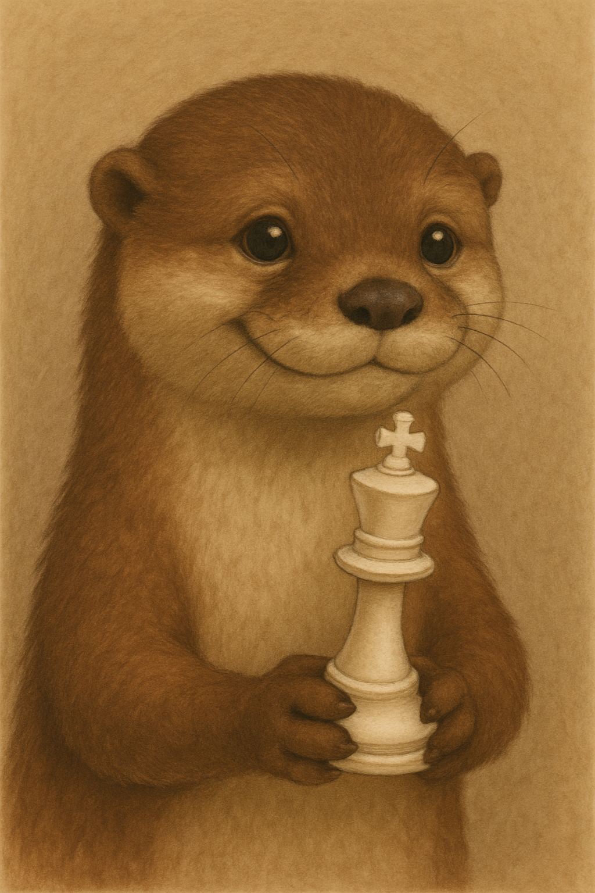

Hi! I'm Dan — a former programmer who loves the game of chess. Inspired by my grandkids and using Claude AI and vibe coding I built this site to share tools that help players at every level study, train, and play better.